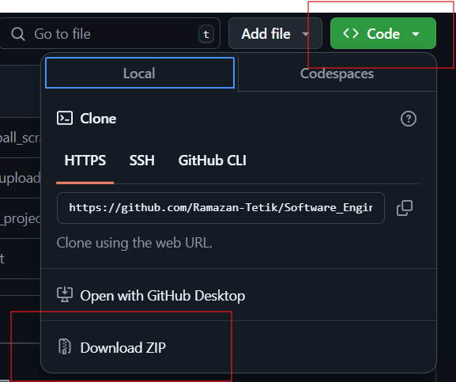
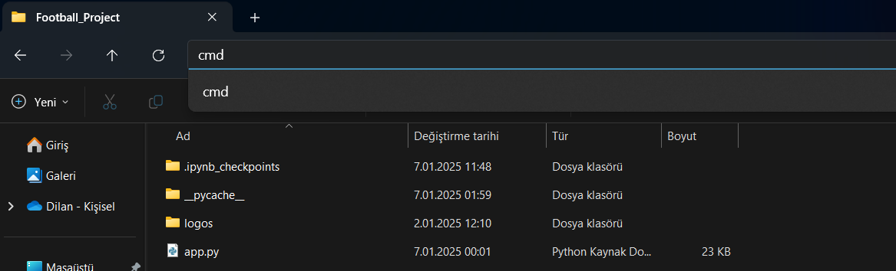
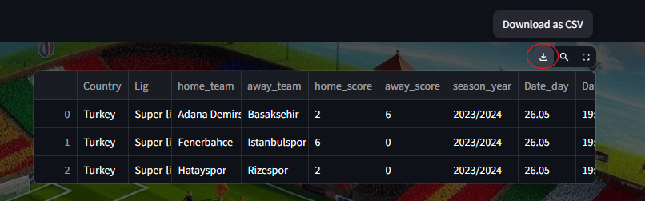

Football Application
Football Data Project Guide
Team Members
- Ramazan Tetik – 211805044
- Dilan Nihadioğlu – 211805072
- Gökhan Ergül – 211805060
- Esra Aydın – 211805079
- Azime Şimşek – 211805055
- Ali Kaynakçı – 211805061
- Ahmet Muhammet Aydın – 211805036
- Sadık Can Barut – 211805065
- Ahmet Yasin Aydın – 211805059
- Burak Cankurt – 211805069
-
Github: You can view the project's code on GitHub: Software Engineering Final Project.
1.Introduction
This guide explains how to install and use the interface to access football data from hundreds of countries and leagues. You will be able to visualize your data, retrieve league information, and download it in a user-friendly manner.
2.System Requirements
- Python 3.7 or higher
- Compatible web browser (e.g., Chrome, Firefox)
- Internet connection (for live data fetching)
- Windows, macOS, or Linux operating system
-
Warning: To ensure the project runs smoothly, you need to download an ad blocker extension for Chrome. Visit the Chrome Web Store to find and install a suitable extension.
3.Installation Guide
Step 1: Access the Repository
Open the GitHub repository link:
Football Project Repository
Step 2: Download the Project
- Click the "<> Code" button.
- Select the "Download ZIP" option.

Step 3: Extract the Files
After downloading, extract all files from the ZIP archive.
Step 4: Open Command Prompt

- Navigate to the extracted folder.
- In the file path area, type
cmd and press Enter.
Step 5: Navigate to the Project Folder
Change to the project directory by entering:
cd Football_Project
Step 6: Install Required Libraries
Run the following command to install the necessary libraries:
pip install requirements.txt
Step 7: Launch the Application
Run the application by entering:
streamlit run app.py
If you encounter any warnings or prompts from your computer, ensure you allow them.
4.User Interface Overview
Once the application is running, the interface will open in your browser. You can now easily use the features provided.

5.Features and Functionalities
1. Data Source Options
CSV Option
- Upload existing CSV files to visualize data interactively.

Ethernet Option
- Fetch live data from the FlashScore website.
- Apply filters to customize your dataset.


- Download the extracted data directly.

6.Usage Instructions
- Start the application using the steps in the Installation Guide.
- Choose between the CSV Option or Ethernet Option from the interface.
- Fetch live data based on your requirements.
- Apply filters as needed to view and analyze the data.
- Download the dataset in CSV format for further use.
- The system allows users to modify filters dynamically during the data extraction process. Updated filters are immediately applied, and the system retrieves new data based on these changes, seamlessly integrating it with the previously collected data for a smooth and flexible user experience.
7. Troubleshooting and Maintenance
Common Issues:
- Missing Data for Older Matches: If users attempt to fetch data for very old matches, the information may not be available, resulting in an error message. It's important for users to make reasonable selections, such as choosing a more suitable date range, to minimize missing data issues.
- Dependency Errors: Ensure all required libraries are installed using
pip install.
- Browser Compatibility: Use the latest version of your web browser to avoid compatibility issues.
Maintenance:
- Regularly Update Codebase: Frequently update the codebase from the repository to ensure compatibility with the latest features and prevent potential issues.
8.References